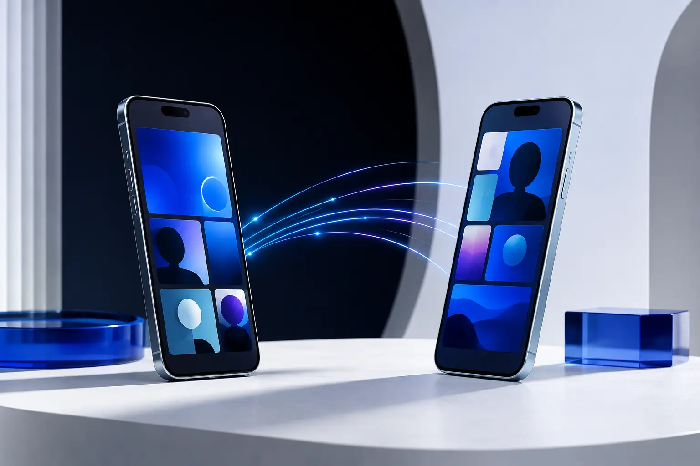

Interest-led discovery
Shared curiosity creates a natural place for conversation to begin.
Meet through what matters.
A social discovery experience built around shared curiosity, spontaneous conversation and a more human first impression.

The idea
Beyond the swipe
Online discovery became efficient but often lost the uncertainty and energy that make meeting someone memorable. VISIONE Social starts with interests and conversation instead of a silent catalogue.
People discover one another through shared signals, move into live conversation when it feels right and stay in control of every connection. The concept is social by design, not performative by default.
Shared curiosity creates a natural place for conversation to begin.
Move from a signal to a real interaction without unnecessary friction.
Compatibility is shaped by context, not reduced to a single image.
Privacy and boundaries stay visible throughout every interaction.
The experience
VISIONE Social is currently an exploration of interaction, trust and discovery. The work is focused on proving the core experience before expanding the platform around it.